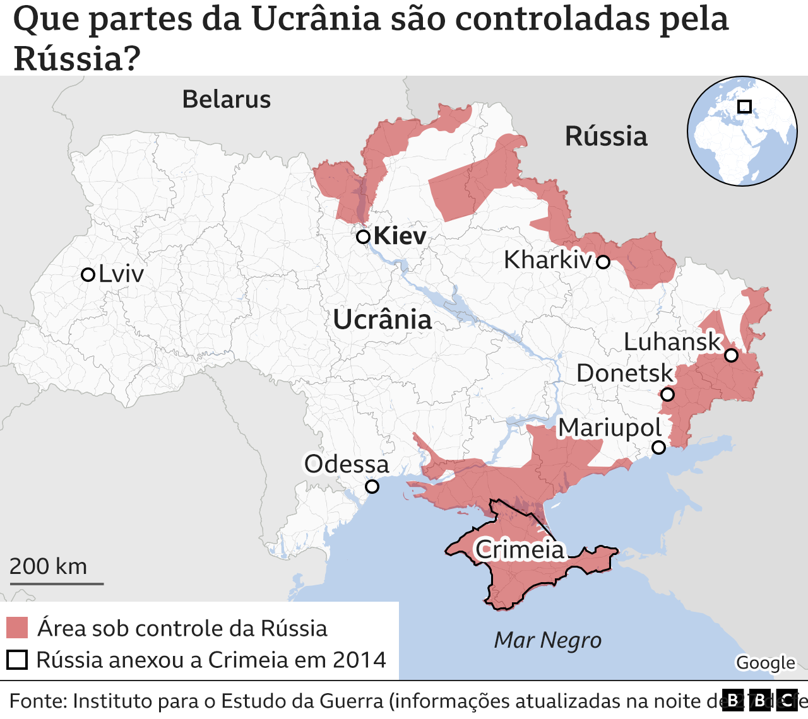
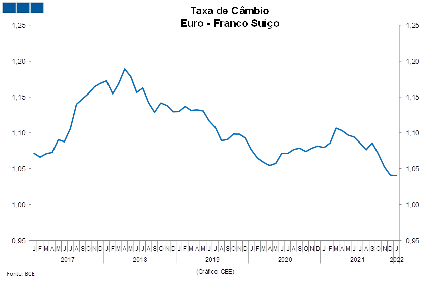

A Segunda Guerra Mundial foi o conflito mais sangrento da nossa história. De 1939 a 1945, milhões de pessoas perderam suas vidas no campo de batalha.
A política expansionista e militarista do nazifascismo provocou um novo conflito mundial.
Aliados e Eixo disputaram durante seis anos a vitória na guerra. O Brasil também participou de forma efetiva com as tropas aliadas.
O final da Segunda Guerra Mundial trouxe grandes consequências para o mundo.
Para compreender as causas da Segunda Guerra Mundial, é preciso lembrar como terminou a Primeira Guerra Mundial, em 1918.
O Tratado de Versalhes, assinado no ano seguinte, impôs severas sanções à Alemanha, que foi considerada a culpada pela guerra.
Os alemães saíram derrotados e humilhados do conflito. Além disso, a crise econômica de 1929, originada nos Estados Unidos,
rapidamente se espalhou pelo mundo, aprofundando ainda mais os países europeus, que, a muito custo, tentavam reerguer-se dos escombros da guerra.
A crise política, social e econômica, fez surgir grupos radicais que prometiam resgatar a grandeza do império alemão de séculos anteriores,
vingando a humilhação que o Tratado de Versalhes promoveu ao povo alemão. Adolf Hitler, com seu Partido Nazista,
ganhava espaço na política da AlemanhaA crise política, social e econômica, fez surgir grupos radicais que prometiam resgatar a grandeza do império
alemão de séculos anteriores, vingando a humilhação que o Tratado de Versalhes promoveu ao povo alemão.
Adolf Hitler, com seu Partido Nazista, ganhava espaço na política da Alemanha
Em 1933, Hitler foi aclamado como chanceler e tinha em suas mãos todos os poderes para governar os alemães.
O Führer, o “líder”, era aclamado por onde passava, e a ele o seu povo prestava juramento de lealdade.
Hitler tratou de expandir o domínio alemão sobre a Europa, reivindicando territórios que pertenceram ao império alemão.
Ele estava disposto a tudo para construir o Terceiro Reich.
NOVAS TENSÕES MUNDIAIS, RÚSSIA X UCRANIA
Vivemos um novo período de incertezas desde que a Rússia invadiu a Ucrânia.
Embora as tensões entre a Rússia e a Ucrânia tenham escalado rapidamente no final de 2021, suas raízes remontam ao passado
histórico e às relações territorial, cultural e política entre esses dois países.
Por ordens do Presidente Vladimir Putin forças militares armadas russa invadiu o território ucraniano tomando
algumas cidades como Melitopol, Enerhodar e Berdyansk, essa ação foi tomada por causa do interesse da Ucrânia em adentrar na Otan
( Organização do Tratado do Atlântico Norte ), esse interesse da Ucrânia distorce os objetivos da Rússia de ampliar sua influência contra o capitalismo.
Diversos países já se posicionaram sobre a guerra na Ucrânia.Vivemos um novo período de incertezas desde que a Rússia invadiu a Ucrânia.
Embora as tensões entre a Rússia e a Ucrânia tenham escalado rapidamente no final de 2021, suas raízes remontam ao passado histórico e às relações territorial,
cultural e política entre esses dois países.
Por ordens do Presidente Vladimir Putin forças militares armadas russa invadiu o território
ucraniano tomando algumas cidades como Melitopol, Enerhodar e Berdyansk, essa ação foi tomada por causa do interesse da Ucrânia em adentrar na Otan
( Organização do Tratado do Atlântico Norte ), esse interesse da Ucrânia distorce os objetivos da Rússia de ampliar
sua influência contra o capitalismo. Diversos países já se posicionaram sobre a guerra na Ucrânia.

Essas ações têm mudanças e consequências devastadoras como, crises sociais e econômicas tanto para Rússia e Ucrânia quanto para o restante do mundo.
Depois de diversas ofensivas e contra ofensiva de ambos os lados, Putin fez uma chamada para recrutar civis para ir á guerra,
o presidente e causador desse conflito estava na espera de que quando ocorresse o primeiro ato ofensivo acontecesse não haveria resistência ucraniana,
mas o que de fato aconteceu que além dos civis ucranianos
aceitarem defender seu pais iam ter apoio de diversos países.
A Rússia sofreu sanções econômicas de nações que auxiliam mundialmente a economia,
mas como resposta, Putin suspendeu os seus produtos para exportação.
Uma das suspensões que mais preocupa a Europa foi a suspensão do gás, o inverno está muito próximo, nos últimos anos a europa escolheu
uma energia mais limpa usando gás natural, eles desativaram diversas formas de gerar energia,dependendo muito do gás importado da rússia,
só que com as sanções e o apoio à Ucrânia a Rússia,
suspendeu o gás e vários outros recursos essenciais para a europa, gerando uma crise energética muito preocupante em vários lugares, a conta de luz triplicou e vários estabelecimentos declararam falência ou reduziram drasticamente as suas operações, outro grave problema que a europa está
enfrentando é a desvalorização da moeda (euro), com a desvalorização da moeda gera uma fraqueza na economia,
e abre espaço para a inflação deixando tudo mais caro.
